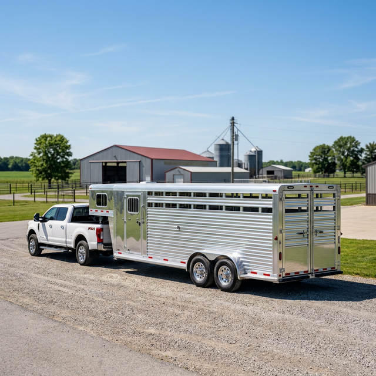

Rooted in Growth
Muddy Run Ag Services LLC began as a service through Muddy Run Repair, focusing on essential cattle trailer washouts and chicken crate cleaning. As our commitment to quality grew, so did the demand for our specialized services.
In April 2025, Muddy Run Ag Services was officially born as an independent entity, dedicated to serving the local agricultural community with unmatched dedication and steady growth.
